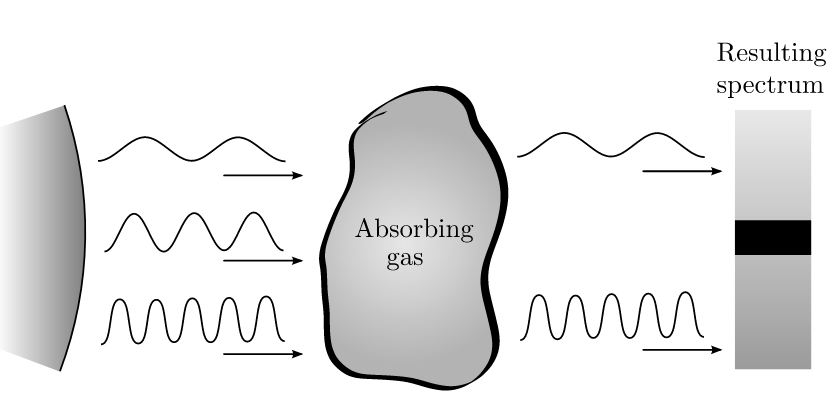

Forrige side🙂 🙁
Bredden til spektrallinjer
 Korrekt: Når atomet beveger seg mot stjerna, så vil, i atomets referansesystem, stjerna bevege seg mot atomet. Husk Doppler effekten: Hvis en lyskilde beveger seg mot deg, vil du observere en kortere bølgelengde! Lysbølgene som atomet observerer til å ha en bølgelengde λ0 har dermed egentlig en lengre bølgelengde sett fra stjerna (observatørens) referansesystem. Atomet absorberer dermed en bølgelengde som er lengre enn λ0 sett fra observatøren! Ser du dermed også at de atomene som beveger seg med hastighet bort fra stjerna vil absorbere en bølgelengde som er kortere enn λ0? Og de atomene som står omtrent i ro i forhold til stjerna vil absorbere omtrent på bølgelengden λ0? På grunn av gasspartiklenes tilfeldig bevegelse inne i gassen, så vil vi, selv om gassen som helhelt står i ro i forhold til stjerna,få absorpsjon både på λ0, men også på andre bølgelengder i nærheten av λ0.. Dette som et resultat av Dopplereffekten fra atomenes tilfeldige bevegelser inne i gassen. Neste side